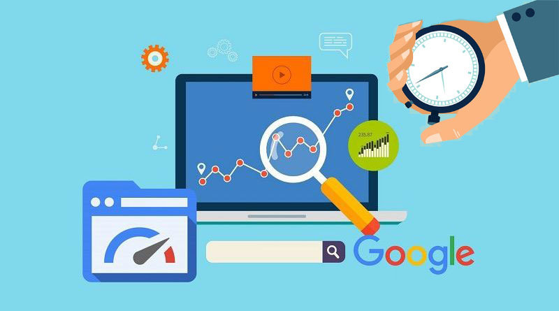

SEO y Rendimiento
En este apartado encontrarás la definición y explicación de qué es el SEO, así como su utilidad para lograr un mejor posicionamiento en los motores de búsqueda.
Además, se abordarán conceptos como SEO técnico, Twitter Cards y Open Graph (OG), junto con un ejemplo práctico de su implementación en una página web.
¿Que es SEO?
El SEO o Search Engine Optimization, lo que see traduce como Optimización de Motores de Busqueda,
es un proceso que ayuda a optimizar el sitio web y dar una mayor visibiliad en algun motor de busqueda,
se toma como marketing digital, es decir, es una tecnica de mercadeo con respecto a lo que queremos mostrar.
Esto lo que hace es que a la hora de que una persona busca algo, por ejemplo "SEO ¿que es?", si el sitio web esta implementando SEO, tenga un rango elevado como
resultado de busqueda, en otras palabras, aparecera como mejor opcion que otras paginas.
Según CourseraCuando optimizas tu sitio para SEO, facilitas que los buscadores de internet encuentren tu contenido, productos y servicios de forma orgánica, sin el uso de anuncios pagados.
Categorias
El SEO comprende varios espaacios en los que puede ser utilizados, lo que hace que se divida en tres categorias, las cuales son las siguentes:
ON-Page
Se refiere al contenido y diseño de una página. Esto permite que los motores de búsqueda encuentren contenido relevante mediante el uso de palabras clave, con el objetivo de satisfacer el interés del usuario. Se valoran sitios bien estructurados y con navegación sencilla, mediante el uso de etiquetas meta y la optimización de las etiquetas de imágenes.
Off-Page
Se refiere a todas las acciones externas que se realizan para mejorar el posicionamiento de tu sitio web en los buscadores. Principalmente incluye la construcción de enlaces (backlinks), menciones en otros sitios, presencia en redes sociales y autoridad de dominio. Su objetivo es aumentar la relevancia y credibilidad del sitio desde fuera.
Técnico
Se enfoca en la optimización de la estructura y el funcionamiento interno del sitio, para que los motores de búsqueda puedan rastrearlo, indexarlo y entenderlo de forma correcta. Esta categoría contempla la velocidad de carga, la arquitectura web y también la optimización móvil, es decir, la responsividad. En otras palabras, se refiere a cómo está construido y presentado el sitio para que el motor de búsqueda lo interprete correctamente.
Velocidad de Carga
Como su nombre se refiera a la velociadad con la que una pagina web muestra su contenido, lo que puede afectar como lo ven los usuarios finales.
¿Es importante?
Es de suma importancia ya que es una factor de posicionamiento que esta confimado tanto para ordenadores de escritorio como para moviles.
Es decir, un tiempo rapido supone un mejor posicionamiento. Por otro lado, si el tiempo es muy lento es mas problabe que los usuarios abandonen la pagina es muy alta, a esto se le llama Probabilidad de Rebote.
SEO Técnico
Para profundizar mas sobre el SEO Tecnico, tenemos que tener claros 4 puntos importantes que nos ayudaran a entender la importancia de este.
Metaetiquetas Semánticas
Son componentes fundamentales, estas proporcionan a los motores de busqueda informacion clave sobre la pagina web. Estas no son visibles para el usuario, pero tienen un impacto significativo en la manera de interpretación de y clasificación de las paginas web. Cuando usamos las metaetiquetas nos aseguramos que los navegadores y moteres de busqueda muestren nuestra pagina en una pocición más arriba.
Datos Estructurados
Son una serie de datos que estan organizados lo que permit que los moteres de búsqueda puedan comprender de una mejor manera el contenido presente en la pagina. Esta basado en etiquetas que son especificas ayudando a categorizar la informacion que esta dentro de la pagina. Siguen esquemas que estan estandarizados por ejemplo un vocabulario respaldado por Google, Bing como lo es Schema.org
Uso correcto de los encabezados
Estos son elementos HTML que definen los titulos y subtitulos de la página. Por lo que son elementos textuales con los que indicamos visual y semánticamente los encabezados, con ellos podemos fijar una organizadcion del texto de una página web, lo que influye en la lectura y a su vez en como se comprende el contenido ya sea por los usaurios o por los motores de búsqueda.
Optimizadores de Imágenes
También conocido como SEO de imágenes, nos permite mejorar la accesibilidad a nuestra pagina web mediante el uso de las imagenes, ademas de que se esta convirtiendo en un requisito legal en varios paises. Se utiliza ya que las busquedas de imagenes representan un 22,6 porciento de todas las busquedas realizadas en Google, por lo que es importante para no perder un gran porcentaje del tráfico en nuestras pagina.
Open Graph y Twitter Cards

Open Graph
Es un protocolo desarrollado por Facebook esto para permitir que las paginas web integren su contenido dendro de las redes sociles. Al usar este protocolo, cuando algun usuario comparte la URL en Facebook u otras plataformas compatibles, la página que se esta compartiendo tenga un formato que permita una visualizacion previa de lo que trata la página. Esto se logra mediante una imagen aluciva a lo que se esta hablando en esta, un titulo, una descripcion breve para dar mas contexto.
Las etiquetas usadas controlan el como nuesta pagina se va a mostrar la página al compartirce. Las etiquetas indispensables para esto son og:title que muestra el titulo, og:description la cual muestra la descripcion que desamos que se vea, y og:image nos da la url y la imagen que desamos mostrar, y por ultimo org:url que se encarga de mostrar la url en si de nuestra página. La etiqueta org:type esta etiqueta tambien es impprtante ya que le dice a la red social como interacturar con el enlace por ejemplo si es un sitio web o un video.
Twitter Cards
Este es un protocolo que es importante para una mejor representación del contenido de nuestra pagina pero para cuando se en Twitter, al igual que el protocolo anterior este permite que los enlaces se muestren de una menera llamativa para las los usuarios.